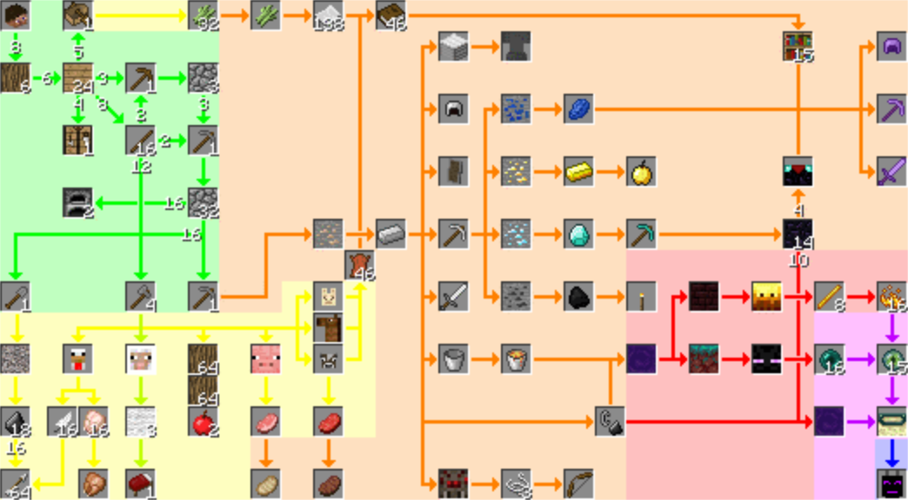

This is a flowchart of the major path of Minecraft, from beginning to "the
End", facing the Ender Dragon.
Steve starts at the top-left. Complete all steps in each colored area
before proceeding to the next.
Following this should take 3-8 hours.

- Green: Get a foothold; should only take a few minutes.
-
Yellow: Gather food and some supplies from the surface; always make a
bed as soon as possible.
- Orange: Mine, craft, and enchant; build a Nether Portal.
-
Red: The Nether - find a Warped Forest (green biome) and farm Endermen,
then find a Nether Fortress and farm Blazes.
-
If pre 1.16 there are no Warped Forest; instead get what Ender
Pearls you can, but finish collecting them back in the Overworld by
running around deserts at night.
- Purple: Find a Stronghold, and activate the End Portal.
-
Blue: The End - slay the Ender Dragon. Bring your enchanted gear, a bow
and arrows, a single Ender Pearl, a stack of cooked meat, a bucket of
water, and Golden Apples (optional).